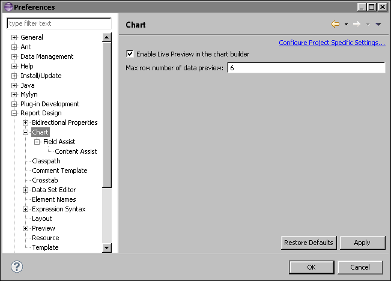
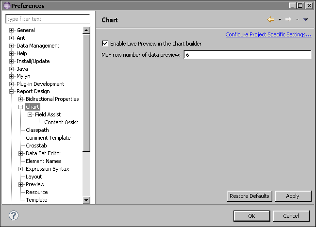

How to change chart preview preferences 1 Choose Window→Preferences. 2 Expand Report Design. Select the Chart list item. Expand Chart and Field Assist, as shown in Figure 14-2.  Figure 14-2 Chart page of Preferences 3 To have the chart builder use randomly selected data in the chart preview window, deselect Enable Live Preview. 4 To set the number of rows that Data Preview displays, type a value in the field. 5 Choose OK.
